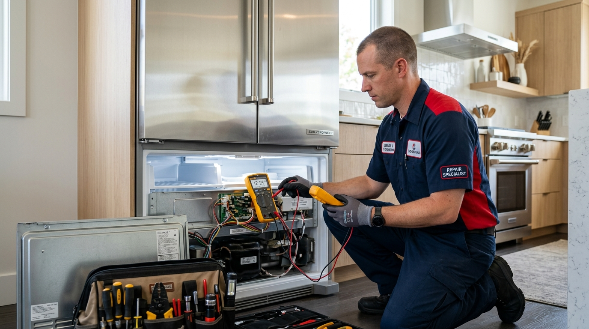

Arçelik, yenilikçi teknolojileri ve üstün dayanıklılığı ile Türkiye'de evlerin en güvendiği beyaz eşya markalarının başında gelir. Akıllı ev çözümleri ve yüksek enerji tasarruflu cihazları ile günlük hayatımızı büyük ölçüde kolaylaştırır.
Ancak ne kadar kaliteli olursa olsun, zamanla yıpranan parçalar ve düzenli yapılmayan bakımlar nedeniyle beyaz eşyalarınız arızalanabilir. Böyle anlarda uzman bir servisten yardım almak cihazınızın ömrünü doğrudan belirler.
Sertler Soğutma, evlerinizdeki konforun kesintiye uğramaması için profesyonel teknik destek sunmaktadır. Arçelik marka cihazlarınızın her türlü bakım ve onarım ihtiyacında yanınızdayız.
Evlerimizde en çok kullandığımız buzdolabı, çamaşır makinesi, bulaşık makinesi ve kurutma makineleri arızalandığında günlük rutinlerimiz altüst olur. Bozulmaya başlayan gıdalar veya yıkanamayan çamaşırlar büyük bir stres kaynağına dönüşebilir.
İşte tam bu noktada Tarsus Arçelik Servisi ekibimiz hızlı ve etkili müdahaleleri ile devreye girer. Deneyimli kadromuzla sorunlarınızı aynı gün içerisinde çözmek için var gücümüzle çalışıyoruz.
Arçelik beyaz eşyaların bünyesinde yer alan hassas elektronik kartlar ve özel motor sistemleri uzmanlık gerektirir. Yetkisiz kişilerin müdahalesi cihazınızda geri dönülmez hasarlar bırakabilir.
Sertler Soğutma teknisyenleri, Arçelik teknolojisine tamamen hakim, gerekli tüm teknik eğitimleri almış uzmanlardan oluşur. Arızanın kaynağı ne olursa olsun en doğru teşhis ve müdahale yöntemini uygularız.
Tarsus ve çevresinde yıllardır sürdürdüğümüz başarılı hizmetlerle güvenin adresi haline geldik. Tarsus Arçelik Servisi alanındaki tecrübemiz sayesinde cihazlarınızı ilk günkü çalışma performansına kavuşturuyoruz.
Firmamız, müşteri memnuniyetini en üst seviyede tutmayı ilke edinmiştir. İşlemlerimizin her aşamasında sizleri bilgilendirir ve tamamen şeffaf bir servis süreci yürütürüz.
Arçelik cihazlarınızda oluşan her türlü teknik aksaklık için gönül rahatlığıyla bizi tercih edebilirsiniz. Sertler Soğutma güvencesiyle eşyalarınız Emin ellerde işlem görür.
Siz de kaliteli, güvenilir ve garantili bir teknik servis deneyimi yaşamak istiyorsanız hemen bizimle iletişime geçebilirsiniz. Tarsus Arçelik Servisi uzmanlarımız bir telefonla adresinize ulaşmaya hazırdır.
Tarsus Arçelik Servisi İle Profesyonel Onarım
Beyaz eşya onarımında profesyonellik, arızalı parçayı değiştirmekten çok daha derin bir uzmanlık anlayışı gerektirir. Cihazın çalışma prensibini iyi anlamak ve tekrarlayabilecek arızaları önceden saptamak profesyonelliğin temelidir.
Tarsus Arçelik Servisi hizmetlerimizde Sertler Soğutma olarak tam da bu profesyonel anlayışla hareket ediyoruz. Arçelik markasının tüm modellerine özel geliştirilmiş test cihazlarımızla sorunları kökten çözüyoruz.
Teknik ekibimiz adrese ulaştığı andan itibaren disiplinli ve sistemli bir çalışma sürecine başlar. İlk olarak cihazın elektriksel ve mekanik tüm aksamları gözden geçirilir.
Onarım sürecinde izlediğimiz adımlar, cihazınızın fabrika standartlarını korumasını amaçlar. Sertler Soğutma uzmanları arızalı bileşenleri tespit ederken zaman kaybını tamamen ortadan kaldırır.
Profesyonel onarımın bir diğer önemli boyutu da kullanılan ekipmanların kalitesidir. Tarsus Arçelik Servisi işlemlerimizde son teknoloji arıza tespit cihazları ve dijital ölçüm aletleri kullanmaktayız.
Bu sayede gözle görülmeyen elektronik kart hatalarını veya mikron düzeyindeki gaz kaçaklarını bile kolaylıkla tespit edebiliriz. Sertler Soğutma kalitesi ile cihazlarınız detaylı bir sağlık taramasından geçer.
Onarım işlemleri sırasında evinizin temizliğine ve hijyenine de azami özen gösterilir. Teknisyenlerimiz çalışma alanını koruyucu ekipmanlarla temiz tutarak işlemleri tamamlar.
Sıradan tamircilerin uyguladığı geçici çözümler yerine, uzun yıllar sorunsuz çalışacak kalıcı onarımlar gerçekleştiriyoruz. Tarsus Arçelik Servisi bu vizyonla bölgenin en çok tercih edilen servisi olmuştur.
Onarımı tamamlanan cihazlar, tüm fonksiyonları test edildikten sonra çalışır vaziyette tarafınıza teslim edilir. Sertler Soğutma uzmanlığı sayesinde cihazlarınızı güvenle kullanmaya devam edebilirsiniz.
Her bir Arçelik modelinin kendine özgü mekanik özellikleri bulunmaktadır. Ekibimiz bu özel yapıları çok iyi bildiği için onarım süreci sorunsuz tamamlanır.
Tarsus Arçelik Servisi ihtiyaçlarınızda profesyonel bir ekiple çalışmanın rahatlığını yaşamak için bizimle iletişim kurabilirsiniz. Sertler Soğutma sizlere bir telefon kadar yakındır.
Sertler Soğutma Arçelik Beyaz Eşya Tamiri
Arçelik ürün gamında yer alan tüm ev aletleri için kapsamlı bir tamir ve bakım hizmeti sunuyoruz. Buzdolabından bulaşık makinesine, çamaşır makinesinden fırınlara kadar her cihaz özel uzmanlık alanımızdır. Yerli üretim beyaz eşyalarınız için ise alanında lider Adapazarı Arçelik servisi çözümlerinden faydalanarak cihaz ömrünü uzatabilirsiniz.
Sertler Soğutma çatısı altında gerçekleştirdiğimiz Tarsus Arçelik Servisi hizmetleri, cihazlarınızın ilk günkü çalışma verimliliğine dönmesini hedefler. Tamir süreçlerimizde titizlik ön plandadır.
Soğutma grubunda yer alan Arçelik buzdolapları, yiyeceklerin tazeliğini korumak için kesintisiz çalışmak zorundadır. Motor arızaları, fan problemleri veya soğutmama şikayetlerinde hızla müdahale ediyoruz.
Çamaşır makinelerinde oluşan sıkma yapmama, aşırı ses çıkarma veya su boşaltmama gibi durumlarda profesyonel tamir çözümleri sunuyoruz. Sertler Soğutma ustaları kazan bilyalarından pompa motorlarına kadar tüm parçaları onarabilir.
Bulaşık makinelerinin su ısıtmama, iyi yıkamama veya su sızdırma arızaları da Tarsus Arçelik Servisi uzmanlığımızla kısa sürede ortadan kaldırılır. Yıkama motoru ve rezistans değişimleri garantili yapılır.
Ankastre ürünlerde ve fırınlarda meydana gelen termostat arızaları veya pişirme eşitsizlikleri teknik ekibimizce hızlıca giderilir. Sertler Soğutma her ürün grubuna özel müdahale protokolleri uygular.
Tamir işlemlerimizde cihazların orijinal yapısını korumaya özen gösteririz. Gereksiz parça değişimlerinden kaçınarak öncelikle mevcut aksamın onarılabilirliğini değerlendiririz.
Bu yaklaşımımız hem cihazın orijinalliğini korur hem de müşterilerimize ciddi maliyet avantajları sağlar. Tarsus Arçelik Servisi dürüst servis anlayışının öncüsüdür.
Cihazlarınızın tamir süreci boyunca yapılan tüm işlemler kayıt altına alınır. Sertler Soğutma şeffaf hizmet anlayışı gereği müşterilerini her aşamada bilgilendirir.
Evlerinizdeki temel yardımcınız olan beyaz eşyaların bozulması durumunda paniğe kapılmanıza gerek yoktur. Tarsus Arçelik Servisi ekibimiz en zorlu arızaları dahi pratik şekilde çözer.
Tarsus halkına yıllardır kesintisiz ve yüksek standartlarda hizmet sunmanın gururunu yaşıyoruz. Sertler Soğutma uzmanlığı ile Arçelik eşyalarınız emin ellerdedir.
Hızlı Tarsus Arçelik Servisi Destek Ağı
Arçelik Cihazınız İçin Hemen Randevu Alın
Orijinal yedek parça ve 1 yıl servis garantisiyle Tarsus genelinde aynı gün adresinizdeyiz.
Aniden bozulan bir beyaz eşya, tüm günlük planlarınızı altüst edebilir. Özellikle içindeki gıdaların bozulma riski bulunan buzdolabı arızalarında hızlı servis müdahalesi yaşamsal önem taşır.
Sertler Soğutma, Tarsus genelinde kurduğu geniş mobil servis ağı ile acil servis çağrılarına jet hızıyla yanıt vermektedir. Tarsus Arçelik Servisi desteğimizle mağduriyetinizi en kısa sürede gideriyoruz.
Gezici mobil servis araçlarımız Tarsus'un tüm mahalle ve semtlerinde aktif olarak görev yapmaktadır. Çağrı merkezimize ulaşan kaydınız en yakın araca anında iletilir.
Saniyeler içerisinde organize olan ekibimiz, belirtilen adrese tam vaktinde ulaşır. Sertler Soğutma ile günlerce teknik servis bekleme çilesi sona erer.
Hızlı servis anlayışımız sadece adrese çabuk ulaşmakla sınırlı değildir. Araçlarımızda en çok ihtiyaç duyulan Arçelik yedek parçaları hazır bulundurulur.
Bu sayede arızaların büyük bir kısmı ilk ziyarette, cihazınız yerinden kaldırılmadan evinizde çözüme kavuşturulur. Tarsus Arçelik Servisi pratik çözümlerin adresidir.
Zaman yönetimi konusundaki hassasiyetimiz müşteri memnuniyetimizin en önemli kaynaklarından biridir. Verilen randevu saatlerine sadık kalarak planlarınıza saygı gösteriyoruz.
İşinizden veya günlük programınızdan geri kalmadan arızalı cihazlarınızı hızlıca tamir ettirebilirsiniz. Sertler Soğutma sizlerin konforunu her zaman ön planda tutar.
Acil durum durumlarında nöbetçi servis araçlarımız da devreye girmektedir. Günün her saatinde ulaşabileceğiniz bir teknik destek ağımız mevcuttur.
Tarsus Arçelik Servisi arayışınızda hız, kalite ve güveni bir arada bulmak istiyorsanız doğru adrestesiniz. Sertler Soğutma ekibimiz sorunlarınızı hızla çözer.
Siz de bekletmeyen, zamanında gelen ve çözüme odaklanan bir servis arıyorsanız hemen randevunuzu alabilirsiniz. Hızlı destek ağımızla hizmetinizdeyiz.
Sertler Soğutma Garantili Arçelik Yedek Parça
Arçelik beyaz eşyaların performansını ve kullanım ömrünü belirleyen en kritik unsur kullanılan yedek parçaların kalitesidir. Yan sanayi veya kalitesiz parçalar cihazın diğer aksamlarına da zarar verebilir. Benzer şekilde evinizdeki diğer akıllı ev teknolojileri için kurumsal Adapazarı Beko servisi ekiplerinden periyodik bakım desteği alabilirsiniz.
Sertler Soğutma, gerçekleştirdiği tüm onarım işlemleri için orijinal ve tam uyumlu yedek parçalar kullanmaktadır. Tarsus Arçelik Servisi güvencemiz altında değişen parçalar garantilidir.
Orijinal yedek parça kullanımı cihazınızın fabrika çıkışındaki enerji verimliliğini ve çalışma sessizliğini korumasını sağlar. Takılan her yeni bileşen cihazınızla tam bir uyum içinde çalışır.
Firmamız bünyesinde yapılan parça değişimleri ve işçilik uygulamaları 1 yıl süreyle resmi garanti kapsamına alınır. Sertler Soğutma verdiği hizmetin sonuna kadar arkasındadır.
Garanti süresi içerisinde takılan parçada herhangi bir üretim veya montaj hatası oluşursa, ekibimiz ücretsiz olarak müdahale eder. Tarsus Arçelik Servisi ile yatırımlarınız güvendedir.
Kullandığımız kaliteli parçalar sayesinde aynı arızanın kısa süre sonra tekrarlanması riskini tamamen ortadan kaldırıyoruz. Müşterilerimize uzun ömürlü kullanım imkanı sunuyoruz.
Yan sanayi parçaların anlık çözümler sunduğu ancak uzun vadede cihazı tamamen kullanılamaz hale getirdiği unutulmamalıdır. Sertler Soğutma riskli parçaları asla kullanmaz.
Stoklarımızda Arçelik marka buzdolapları, çamaşır makineleri, bulaşık makineleri ve klimalar için geniş bir yedek parça çeşitliliği yer alır. Bu da tamir sürelerini oldukça kısaltır.
Değiştirilen eski arızalı parçalar şeffaflık ilkemiz gereği müşterilerimize gösterilir ve durumları izah edilir. Tarsus Arçelik Servisi dürüstlükten taviz vermez.
Cihazlarınızın değerini ve orijinalliğini korumak istiyorsanız yedek parça hususunda uzman bir firmayla çalışmalısınız. Sertler Soğutma garantili çözümleriyle yanınızdadır.
Siz de kaliteli ve garantili parçalarla Arçelik cihazlarınızı yenilemek için hemen bizimle iletişime geçebilirsiniz. Uzman kadromuz hizmet vermeye hazırdır.
Tarsus Arçelik Servisi Tarafından Sunulan Özel Çözümler
Her evdeki beyaz eşya kullanım alışkanlığı ve cihazın bulunduğu ortam koşulları birbirinden farklıdır. Bu nedenle teknik servis hizmetinde standart yaklaşımlar her zaman başarı getirmeyebilir.
Tarsus Arçelik Servisi olarak Sertler Soğutma bünyesinde kişiselleştirilmiş ve özel teknik çözümler geliştiriyoruz. Cihazınızın modeline, yaşına ve kullanım yoğunluğuna uygun onarım stratejileri belirliyoruz.
Özellikle eski nesil Arçelik cihazlarda yedek parça bulunabilirliği zorlaşsa da geniş tedarik ağımız sayesinde özel çözümler sunabiliyoruz. Cihazınızı hurdaya ayırmak yerine ömrünü uzatıyoruz.
Elektrik şebekesinden kaynaklanan voltaj dalgalanmalarına karşı koruyucu akım korumalı priz ve kart koruma sistemleri öneriyoruz. Sertler Soğutma sadece tamir etmez, korur.
Kullanım alanının nem, sıcaklık veya havalandırma şartlarına göre cihazların yerleşim düzenini de kontrol etmekteyiz. Tarsus Arçelik Servisi ekibimiz çevresel faktörleri de hesaba katar.
Cihazlarınızın enerji tüketimini artıran gizli arızaları tespit ederek elektrik ve su faturalarınızı düşürecek çözümler sunuyoruz. Verimlilik odaklı bakım anlayışımız fark yaratır.
Buzdolabı kapı contalarının gevşemesi gibi ufak görünen ama büyük enerji kaybına yol açan sorunlarda özel kalibrasyon ve conta yenileme hizmeti vermekteyiz.
Sessiz çalışma özelliğini kaybetmiş Arçelik cihazlarda balans ayarları ve titreşim sönümleyici özel parçalar kullanarak ilk günkü sessizliği geri kazandırıyoruz.
Sertler Soğutma sunduğu bu özel çözümlerle müşteri beklentilerinin ötesine geçmeyi başarmaktadır. Tarsus Arçelik Servisi farkını her işlemde hissettiriyoruz.
Cihazınızda yaşadığınız karmaşık veya çözülemez görünen sorunlar için yenilikçi yöntemlerimizle destek veriyoruz. Teknik ekibimiz her türlü zorlu arızanın üstesinden gelebilir.
Ev teknolojilerinizin daha sağlıklı ve uzun ömürlü olması için sunduğumuz özel çözümlerden yararlanabilirsiniz. Sertler Soğutma sizlere özgün hizmetler sunmaya devam ediyor.
Sertler Soğutma Arçelik Arıza Tespiti Ve Müdahale
Arıza tespitinin doğru yapılması, onarım sürecinin en önemli ve kritik aşamasıdır. Yanlış teşhis konulan bir cihazda yapılan parça değişimleri sorunu çözmediği gibi boş yere maliyet yaratır.
Sertler Soğutma, arıza tespiti hususunda son derece titiz ve bilimsel yöntemlerle çalışmaktadır. Tarsus Arçelik Servisi teknisyenlerimiz gelişmiş bilgisayarlı analiz cihazları kullanır.
Arçelik cihazların hafızasında biriken hata kodları dijital okuyucular vasıtasıyla saptanır. Bu sayede arızanın kökeni dakikalar içerisinde net bir şekilde ortaya çıkarılır.
Sadece gözle görülen belirtilere bakarak karar vermiyoruz. Aksamların akım çekim değerleri, voltaj durumları ve mekanik sürtünmeleri detaylıca ölçülmektedir.
Arıza tespiti tamamlandıktan sonra Sertler Soğutma teknisyeni hazırladığı raporu müşteriye sunar. Arızanın nedeni, çözüm yolu ve maliyeti hakkında detaylı bilgi verilir.
Müşterimiz süreci onayladığı an müdahale aşamasına geçilir. Tarsus Arçelik Servisi müdahalelerinde güvenlik prosedürleri eksiksiz olarak uygulanır.
Elektrik ve su bağlantıları emniyete alınarak tamir işlemi gerçekleştirilir. Cihazın diğer hassas bileşenlerinin zarar görmemesi için azami özen gösterilmektedir.
Onarım sonrası yapılan testlerde arızanın tamamen giderildiği teyit edilir. Sertler Soğutma şansa bırakılmış hiçbir işlemi kabul etmez, kesin sonuç odaklı çalışır.
Zamanında yapılan doğru müdahaleler, cihazın motor veya anakart gibi en pahalı aksamlarının yanmasını önler. Erken arıza tespiti hayat kurtarır.
Arçelik cihazlarınızda en ufak bir tuhaflık, koku veya anormal ses fark ettiğinizde derhal bizi aramalısınız. Tarsus Arçelik Servisi uzmanlarımız sorunu büyümeden çözer.
Hassas cihazlar vasıtasıyla gerçekleştirilen doğru arıza tespiti hizmetimizden yararlanmak için randevunuzu hemen oluşturabilirsiniz. Sertler Soğutma yanınızdadır.
En Yakın Tarsus Arçelik Servisi Sertler Soğutma
Teknik servis ihtiyacı doğduğunda en önemli kriterlerden biri de servisin konumsal yakınlığıdır. Yakın bir teknik servis, acil durumlarda adrese dakikalar içinde ulaşabilir. Alman teknolojisine sahip dayanıklı ev aletlerinizde ise güvenilir Adapazarı Bosch servisi ayrıcalıklarından yararlanarak arızaları erkenden önleyebilirsiniz.
Sertler Soğutma, Tarsus'un tüm merkez ve çevre mahallelerine yayılmış mobil ekipleriyle size her zaman en yakın konumdadır. Tarsus Arçelik Servisi arayışınızda uzağa gitmenize gerek kalmaz.
Mersin Cad., Atatürk Cad., Gazipaşa, Anıt, Yeşilyurt, Fatih veya Şehitlerik tepesi dahi olsa Tarsus'un her yerine eşit mesafedeyiz. Akıllı konum takip sistemimizle adrese en yakın aracı yönlendiriyoruz.
Yakın olmamızın getirdiği bir diğer avantaj da nakliye ve ulaşım sürelerinin sıfıra yakın seviyeye inmesidir. Sertler Soğutma hızlı erişim ağıyla fark yaratır.
Buzdolabı gibi içindeki ürünlerin bozulma riski olan cihazlarda en yakın servis olmanın avantajını müşterilerimize yaşatıyoruz. Tarsus Arçelik Servisi ekibimiz dakikalar içinde kapınızdadır.
Yerel bir firma olmanın getirdiği samimiyet ve sorumlulukla hareket ediyoruz. Tarsus halkının komşusu ve güvenilir teknik çözüm ortağıyız.
İhtiyaç duyduğunuz her an telefonun diğer ucunda sizleri bekleyen güler yüzlü müşteri temsilcilerimiz mevcuttur. Konum tarifine gerek kalmadan adresinizi kolayca buluruz.
Gezici mobil ekiplerimizin gün içindeki rota planlaması Tarsus'un yoğun noktalarına göre optimize edilir. Sertler Soğutma her an çağrınıza yanıt vermeye hazırdır.
Bölgeyi çok iyi tanıyan tecrübeli şoförlerimiz ve teknisyenlerimiz sayesinde trafikte zaman kaybetmeden adrese varılır. Tarsus Arçelik Servisi zamanınızın kıymetini bilir.
En yakın servis konforunu garantili işçilik ve kaliteli yedek parçayla birleştiriyoruz. Hem hızlı hem de güvenilir hizmet almak artık çok kolay.
Size en yakın Arçelik servisi ile çalışarak arızalı eşyalarınızın sorununu hemen çözebilirsiniz. Sertler Soğutma bir tık veya bir telefon kadar yakınınızdadır.
Sertler Soğutma Arçelik Teknik Ekip Hizmeti
Bir teknik servisin kalitesini belirleyen ana unsur sahadaki teknik ekibin tecrübesi ve bilgi birikimidir. Eğitimli bir ekip, karmaşık sorunları bile pratik şekilde çözebilir.
Sertler Soğutma, Arçelik teknolojisi konusunda uzmanlaşmış son derece donanımlı bir teknik ekibe sahiptir. Tarsus Arçelik Servisi hizmetlerimizi bu nitelikli kadromuzla sunuyoruz.
Teknik personelimiz dönemsel olarak Arçelik markasının yeni nesil ürünleri ve akıllı teknolojileri üzerine eğitimler almaktadır. Gelişen teknolojiye tam uyum sağlıyoruz.
Sadece teknik bilgi değil, aynı zamanda müşteri ilişkileri, etik çalışma ve iş güvenliği konularında da ekibimiz eğitilmiştir. Sertler Soğutma kurumsal kültürünü sahaya yansıtır.
Evinize gelen teknisyenlerimiz galoş kullanarak ve hijyen kurallarına uyarak çalışmaya başlar. Müşterilerimizin yaşam alanlarına tam bir saygı gösterilmektedir.
Arıza hakkında anlaşılır ve sade bir dille müşteriye bilgi verilir. Karmaşık teknik terimler yerine herkesin anlayabileceği net açıklamalar sunulur.
Teknik ekibimiz karşılaştığı sorunlar karşısında soğukkanlı, çözüm odaklı ve pratik davranır. Tarsus Arçelik Servisi süreçlerinde belirsizliklere yer bırakılmaz.
Her teknisyenimizin yanında gerekli tüm profesyonel el aletleri, yedek parçalar ve güvenlik ekipmanları eksiksiz olarak bulunur. Çalışma esnasında aksama yaşanmaz.
Servis sonrası süreçte de ekibimiz müşterilerimizin sorularını yanıtlamaya ve kullanım tavsiyelerinde bulunmaya devam eder. Sertler Soğutma sürekli destek sağlar.
Güler yüzlü, saygılı ve işinin ehli bir kadrodan teknik servis hizmeti almanın rahatlığını yaşayabilirsiniz. Müşteri memnuniyetimiz ekibimizin kalitesinden gelmektedir.
Arçelik cihazlarınızı işini bilen profesyonel ellere emanet etmek istiyorsanız bizimle iletişime geçebilirsiniz. Tarsus Arçelik Servisi ekibimiz hizmetinizdedir.
Tarsus Arçelik Servisi İletişim Ve Çağrı Merkezi
Teknik servis sürecinin ilk ve en önemli adımı müşteri ile kurulan doğru iletişimdir. Anlaşılır, hızlı ve erişilebilir bir iletişim ağı müşterinin mağduriyetini en aza indirir. Sertler Soğutma, Tarsus Arçelik Servisi iletişim ve çağrı merkezi altyapısını en modern teknolojilerle donatmıştır. Müşteri temsilcilerimiz günün her anında gelen arıza bildirimlerini ve randevu taleplerini büyük bir dikkatle kaydetmektedir. İskandinav mühendisliği iklimlendirme ve beyaz eşya çözümleri için profesyonel bir Hatay Electrolux servisi desteğine başvurabilirsiniz.
Çağrı merkezimizi aradığınızda sizi karşılayan deneyimli personelimiz, öncelikle arızalanan Arçelik cihazınızın modeli ve gösterdiği belirtiler hakkında detaylı bilgi alır. Eğer sorun kullanıcı hatasından veya basit bir ayardan kaynaklanıyorsa, telefonda yönlendirme yapılarak sorunun anında çözülmesi sağlanır. Bu sayede müşterilerimiz boş yere servis bekleme durumunda kalmazlar. Telefonda çözülemeyen durumlarda ise derhal konumunuza en yakın mobil Tarsus Arçelik Servisi ekibimiz sevk edilir.
Sertler Soğutma çağrı merkezi üzerinden sunulan hizmetlerimiz sadece arıza kaydı oluşturmakla sınırlı değildir. Önceden yapılmış olan tamirlerin garanti durumunu sorgulayabilir, periyodik bakım randevuları oluşturabilir veya yedek parça bulunabilirliği hakkında bilgi alabilirsiniz. Şeffaf ve ulaşılabilir iletişim anlayışımız firmamızın Tarsus'taki en büyük güçlerinden biridir.
- Teknolojik yenilikleri yakından takip eden Sertler Soğutma, telefon aramalarının yanı sıra farklı iletişim kanallarını da müşterilerinin hizmetine sunmaktadır:
Web sitemizde bulunan canlı destek ve hızlı arıza bildirim formları üzerinden saniyeler içinde servis kaydı bırakabilirsiniz.
WhatsApp destek hattımız üzerinden cihazınızın arıza videosunu veya hata kodunun görselini ileterek daha hızlı bir ön teşhis yapılmasını sağlayabilirsiniz.
E-posta destek hattımız üzerinden kurumsal taleplerinizi ve toplu bakım isteklerinizi iletebilirsiniz.
Sosyal medya kanallarımız üzerinden güncel bakım kampanyalarımızı takip edebilir ve hızlı mesaj gönderebilirsiniz.
Acil durum teknik servis taleplerinizde Tarsus Arçelik Servisi çağrı merkezimiz anında aksiyon alır. Özellikle buzdolabı arızalarında gıdaların bozulmaması adına kaydınız "öncelikli servis" statüsüne alınarak saha ekibine iletilir. Sertler Soğutma olarak müşteri zamanına ve eşyasına verdiğimiz değeri bu hızlı iletişim organizasyonu ile kanıtlıyoruz.
Müşteri temsilcilerimiz servis sonrasında da sizi arayarak aldığınız teknik hizmetten memnun kalıp kalmadığınızı sorgular. Varsa öneri ve talepleriniz titizlikle not edilerek hizmet kalitemiz her geçen gün artırılır. Tarsus Arçelik Servisi iletişim kanallarımızı kullanarak siz de hızlı, güvenilir ve kurumsal bir teknik servis desteği alabilirsiniz. Sertler Soğutma çağrı merkezi 7/24 hizmetinizdedir.
Sertler Soğutma Arçelik Buzdolabı Gaz Dolumu
Buzdolapları, gıdaların tazeliğini korumak ve bakterilerin üremesini engellemek için kapalı devre bir soğutma gazı sistemiyle çalışır. Bu sistem içerisinde yer alan soğutucu gaz, zamanla bakır borulardaki çatlaklar, aşınmalar veya kaynak noktalarındaki sızıntılar nedeniyle dışarı kaçabilir. Buzdolabınızın motoru (kompresörü) durmadan çalıştığı halde soğutma yapmıyorsa veya kapak açık uyarısı veriyorsa gaz kaçağı ihtimali oldukça yüksektir. Sertler Soğutma, Arçelik buzdolabı gaz dolumu işlemlerinde Tarsus'taki en tecrübeli firmadır.
Gaz dolumu işlemi sıradan bir gaz ilavesinden ibaret değildir. Eksilen gazın nedeni bulunmadan doğrudan gaz basılması kısa süre sonra gazın tekrar kaçmasına ve maliyetin tekrarlanmasına yol açar. Tarsus Arçelik Servisi teknisyenlerimiz öncelikle kapalı devredeki kaçak noktasını hassas elektronik detektörler ve nitrojen testi yardımıyla saptar. Kaçak noktası tespit edildikten sonra gümüş kaynak veya özel pres yöntemleri ile boru hattı tamamen sızdırmaz hale getirilir.
Kaçak tamiri tamamlandıktan sonra sistemde kalan nemin ve havanın tamamen tahliye edilmesi şarttır. Sertler Soğutma uzmanları vakum pompası kullanarak buzdolabının soğutma hatlarını vakumlar. Sistem tamamen temizlendikten sonra Arçelik cihazınızın etiketi üzerinde belirtilen gramajda ve türde (R600a veya R134a) soğutucu gaz şarjı gerçekleştirilir. Yanlış gaz türü veya hatalı gramaj kullanımı motorun yanmasına sebebiyet verebilir.
Arçelik buzdolaplarında gaz kaçaklarının belirmesine neden olan başlıca etkenler şunlardır:
Buzdolabı gövde borularında zamanla oluşan korozyon ve paslanmalar.
Taşınma veya temizlik esnasında arka kondanser radyatörünün darbe alması.
Dondurucu bölümdeki buzların sivri cisimlerle kazınması sonucu evaporatör borularının delinmesi.
Fabrikasyon kaynak noktalarında zamanla oluşan mikron düzeyindeki kılcal çatlaklar.
Sertler Soğutma tarafından gerçekleştirilen Tarsus Arçelik Servisi gaz dolum işlemleri sonrasında buzdolabınızın soğutma değerleri dijital termometrelerle ölçülür. Cihazın fabrika çıkışındaki dondurma ve soğutma performansına ulaştığından emin olunmadan teslimat yapılmaz. Yapılan tüm kaynak ve gaz şarjı işlemleri garanti kapsamına alınmaktadır.
Gaz dolumu gibi yüksek uzmanlık gerektiren hassas işlemlerde tecrübesiz kişilere güvenmek cihazınızı tamamen kaybetmenize yol açabilir. Sertler Soğutma uzman kadrosu ve teknolojik donanımıyla Arçelik buzdolaplarınızın gaz kaçaklarını kesin olarak çözer. Tarsus Arçelik Servisi çağrı merkezimizi arayarak buzdolabınız için profesyonel gaz dolum randevusu oluşturabilirsiniz.
Neden Tarsus Arçelik Servisi Tercih Edilmeli?
Tarsus'ta beyaz eşya servisi veren pek çok farklı işletme bulunmasına rağmen Sertler Soğutma, sunduğu yüksek kalite standartları ve güvenilir hizmet anlayışı ile öne çıkmaktadır. Arçelik marka cihazlarınızın bakım ve onarımında doğru servisi seçmek, hem cihazınızın kullanım ömrünü uzatır hem de bütçenizi korur. Tarsus Arçelik Servisi arayışınızda bizi tercih etmeniz için pek çok haklı neden bulunmaktadır.
İlk olarak firmamız tamamen müşteri memnuniyeti odaklı bir çalışma prensibine sahiptir. Müşterilerimizin yaşadığı mağduriyetleri kendi mağduriyetimiz gibi benimser ve en hızlı çözümü üretmek için çaba harcarız. Sertler Soğutma bünyesinde çalışan her bir teknisyen, Arçelik teknolojisi üzerine uzmanlaşmış, sertifikalı ve tecrübeli kişilerden oluşur. Amatör veya deneme-yanılma yoluyla yapılan tamir uygulamalarına firmamızda asla yer verilmez.
Bizi tercih etmeniz için öne çıkan diğer temel avantajlar şunlardır:
- Orijinal ve Garantili Parça: Onarımlarımızda sadece orijinal ve tam uyumlu Arçelik yedek parçaları kullanılır. Değişen parçalar 1 yıl garantilidir.
- Hızlı Mobil Servis: Tarsus'un tüm mahallelerine yayılan gezici araçlarımız sayesinde aynı gün içerisinde adrese müdahale edilir.
- Şeffaf Fiyat Politikası: Sürpriz giderler veya onaylanmamış ücretler çıkarılmaz. Onarım öncesinde tüm maliyetler müşteriye açıkça bildirilir.
- Son Teknoloji Ekipman: Dijital arıza tespit cihazları ve modern ölçüm aletleri kullanılarak arızanın kaynağı noktasal olarak saptanır.
- 7/24 Kesintisiz İletişim: Çağrı merkezimiz ve online destek hatlarımız üzerinden günün her saatinde bizlere ulaşabilirsiniz.
Sertler Soğutma, dürüst servis ilkesinden taviz vermeden Tarsus halkına hizmet etmektedir. Cihazınızda arızalı olmayan parçaların değiştirilmesi veya gereksiz tamir masrafları çıkarılması gibi etik dışı durumlarla firmamızda karşılaşmazsınız. Tarsus Arçelik Servisi sürecinde her adım açık ve anlaşılır şekilde yürütülür.
Ayrıca düzenli bakım hizmetlerimiz sayesinde cihazlarınızın enerji tüketimini düşürüyor, elektrik ve su faturalarınızda tasarruf etmenizi sağlıyoruz. Kaliteli hizmeti bütçe dostu koşullarla sunmamız Tarsus'ta en çok tavsiye edilen servis olmamızı sağlamıştır. Arçelik eşyalarınızı uzun yıllar güvenle kullanmak istiyorsanız Sertler Soğutma kalitesini tercih edebilirsiniz. Tarsus Arçelik Servisi uzmanlığımızla her zaman yanınızdayız.
Sertler Soğutma Arçelik Yıkama Servisi Çözümleri
Çamaşır ve bulaşık makineleri, hijyen sağlama ve zaman tasarrufu konusunda evlerimizin en büyük yardımcılarıdır. Bu cihazların arızalanması evdeki tüm düzeni altüst edebilir. Sertler Soğutma, Arçelik çamaşır makineleri, bulaşık makineleri ve kurutma makineleri için özel yıkama servisi çözümleri geliştirmektedir. Tarsus Arçelik Servisi kapsamında yıkama grubundaki tüm teknik aksaklıkları yerinde ve garantili olarak gideriyoruz.
Arçelik çamaşır makinelerinde en sık karşılaşılan sorunların başında sıkma esnasında aşırı ses çıkarma, sarsıntı yapma, su almama veya suyu boşaltmama arızaları gelir. Sıkma esnasında oluşan yüksek gürültü genellikle kazan bilyalarının (rulmanların) aşınmasından kaynaklanır. Sertler Soğutma teknisyenleri, özel çektirme aparatları kullanarak rulman ve keçe değişimini orijinal parçalarla gerçekleştirir. Böylece makineniz ilk günkü çalışma sessizliğine kavuşur.
Bulaşık makinelerinde ise suyun ısınmaması, bulaşıkların kirli çıkması veya alt kısımdan su sızdırması gibi problemler yaygındır. Tarsus Arçelik Servisi ekibimiz, yıkama motoru bloke oluşumlarını, rezistans arızalarını ve fıskiye tıkanıklıklarını hızla giderir. Bulaşık makinesinin su boşaltmaması durumunda ise tahliye pompası temizlenir veya gerekirse yenisiyle değiştirilir.
Yıkama grubu cihazlarında uyguladığımız başlıca servis ve bakım çözümleri şunlardır:
Kazan bilya (rulman) yenileme ve pres kazan tamiri işlemleri.
Deterjan kutusu, su giriş ventili ve emniyet kilidi değişimleri.
Tahliye pompası motoru onarımı ve boru tıkanıklıklarının açılması.
Elektronik ana kart tamiri, yazılım güncellemesi ve soket temizlikleri.
Amortisör, yay ve denge ağırlığı kontrolleri ile sarsıntı önleme işlemleri.
Yıkama grubundaki cihazların kireçlenmeye karşı korunması da büyük önem taşır. Sertler Soğutma periyodik bakımlarında özel kimyasal çözücüler kullanılarak kazan, boru ve rezistans yüzeylerindeki kireç tabakası tamamen temizlenir. Bu işlem hem cihazın yıkama performansını artırır hem de rezistansın yanmasını engeller.
Arçelik kurutma makinelerindeki nem sensörü arızaları, filtre tıkanıklıkları ve kayış kopmaları da uzman kadromuzca kısa sürede giderilmektedir. Tarsus Arçelik Servisi yıkama grubu çözümlerimiz sayesinde çamaşır ve bulaşıklarınız her zaman tertemiz kalır. Sertler Soğutma güvencesiyle teknik destek almak için çağrı merkezimizi aramanız yeterlidir.
Sıkça Sorulan Sorular (S.S.S.)
Sertler Soğutma olarak Tarsus genelinde konuşlanmış mobil servis araçlarımız bulunmaktadır. Çağrı kaydınız alındıktan sonra bölgesel yoğunluğa bağlı olarak genellikle aynı gün içerisinde, belirteceğiniz saat diliminde adresinizde oluyoruz.
Evet. Sertler Soğutma bünyesinde gerçekleştirilen tüm yedek parça değişimleri ve işçilik uygulamaları 1 yıl süreyle firmamızın resmi garantisi altındadır. Garanti süresi boyunca değiştirilen parçada oluşabilecek teknik aksaklıklar ücretsiz giderilir.
Çamaşır makinesinin su boşaltmaması genellikle alt tahliye pompasının bozuk para, toka veya hav gibi maddelerle tıkanmasından kaynaklanır. Makinenin fişini çektikten sonra alt kapağı açarak filtreyi temizleyebilirsiniz. Sorun devam ederse Tarsus Arçelik Servisi ekibimizi çağırabilirsiniz.
Işıkların yanması cihaza elektrik geldiğini gösterir. Soğutmama sorunu genellikle kompresör (motor) arızasından, soğutucu gaz kaçağından, fan motoru kilitlenmesinden veya anakart arızasından kaynaklanır. Sertler Soğutma teknisyenlerimizin adreste dijital ölçüm yapması gerekir.
Evet. Sertler Soğutma, Arçelik cihazlarınızın uzun ömürlü ve verimli çalışması adına işlemlerinde sadece tam uyumlu ve orijinal yedek parçalar kullanmaktadır. Yan sanayi parçalar firmamızca kesinlikle kullanılmaz.
Arızaların büyük bir kısmı (%90 oranında) mobil ekiplerimiz tarafından evinizde yerinde onarılmaktadır. Ancak ağır mekanik arızalar, test gerektiren kart tamirleri veya kazan değişimleri gibi durumlarda cihaz onayınız alınarak merkezimize götürülebilir.
Sertler Soğutma müşterilerine esnek ödeme kolaylıkları sağlar. Ödemelerinizi kapıda nakit olarak veya teknisyenlerimizde bulunan mobil POS cihazları aracılığıyla kredi kartı/banka kartı ile güvenle yapabilirsiniz.
Bulaşıkların kirli kalması genellikle fıskiye deliklerinin kireç veya yemek artıklarıyla tıkanmasından, su ısıtma rezistansının bozulmasından veya sirkülasyon pompasının zayıflamasından kaynaklanır. Tarsus Arçelik Servisi ekibimiz fıskiye ve motor temizliklerini gerçekleştirir.
Evet. Sertler Soğutma, 7/24 kesintisiz hizmet anlayışıyla çalışmaktadır. Cumartesi, Pazar günleri ve resmi tatillerde nöbetçi Tarsus Arçelik Servisi ekiplerimiz acil servis talepleriniz için görev başındadır.
Buzdolabının altından su sızması genellikle iç kısımdaki defrost su tahliye kanalının tıkanmasından kaynaklanır. Erinen buz suları dışarıdaki buharlaşma kabına akamadığı için dolap içine ve dışına sızar. Sertler Soğutma ekiplerimiz kanalı özel cihazlarla açar.
Adresinize gelen Tarsus Arçelik Servisi ekibimizin yaptığı detaylı arıza tespiti sonrasında tamir işlemini onaylamazsanız, sadece standart arıza tespit ücreti ödersiniz. Tamir işlemini onaylamanız durumunda ise tespit ücreti toplam tutardan düşülür.
Aşırı sarsıntı ve yürüme sorunu genellikle cihazın zemin dengesizliğinden, amortisörlerin yıpranmasından veya kazan denge ağırlıklarının gevşemesinden kaynaklanır. Sertler Soğutma teknisyenleri amortisör değişimi ve ayak ayarı ile sorunu çözer.
Arçelik cihazlarınızın yılda en az bir kez detaylı periyodik bakımdan geçirilmesi önerilir. Düzenli bakım hem cihaz ömrünü uzatır hem de yüksek elektrik ve su tüketiminin önüne geçerek bütçenizi korur.
Firmamız Tarsus merkezdeki tüm mahallelerin yanı sıra bağlı belde, köy ve yakın sanayi bölgelerine kadar geniş bir coğrafyada Tarsus Arçelik Servisi mobil hizmeti sunmaktadır.
Sertler Soğutma telefon numaralarımızı arayarak, WhatsApp hattımızdan mesaj atarak veya web sitemizde bulunan online randevu formunu doldurarak anında Arçelik servis kaydı oluşturabilirsiniz.